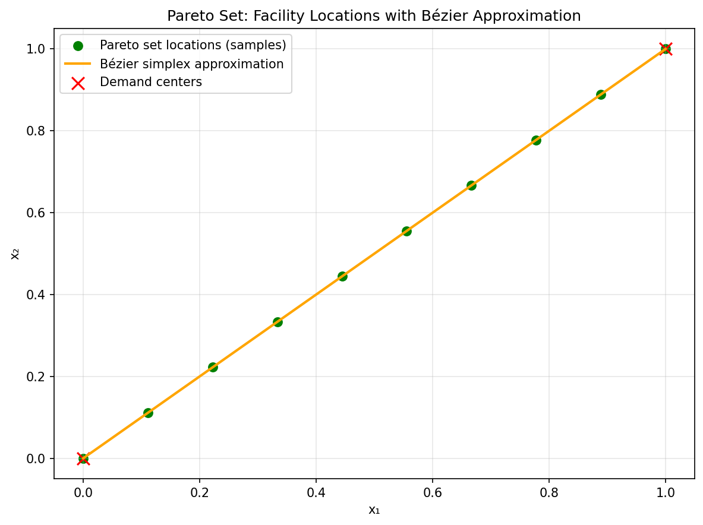
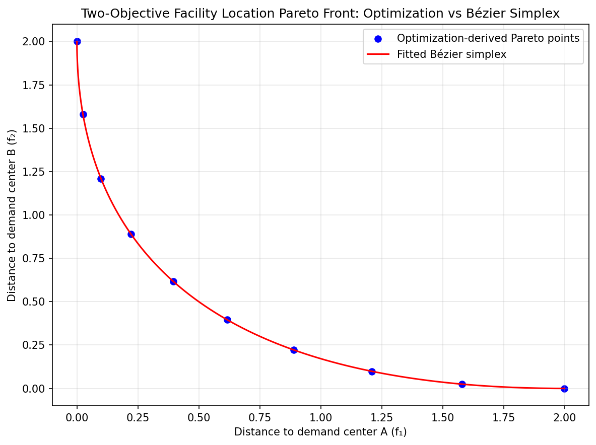
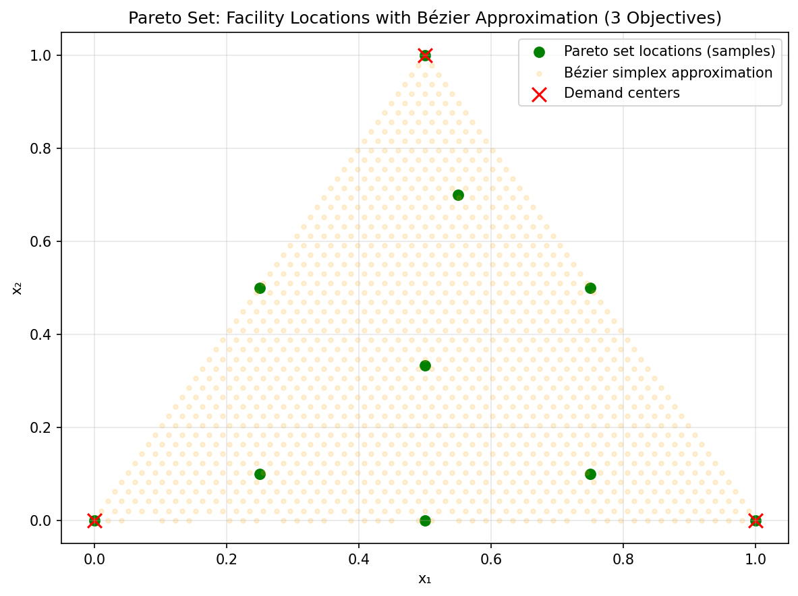
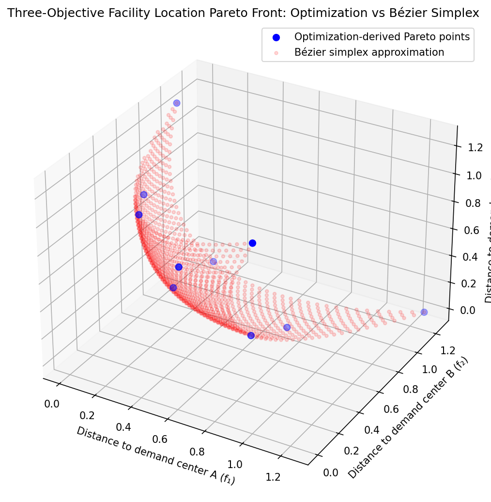
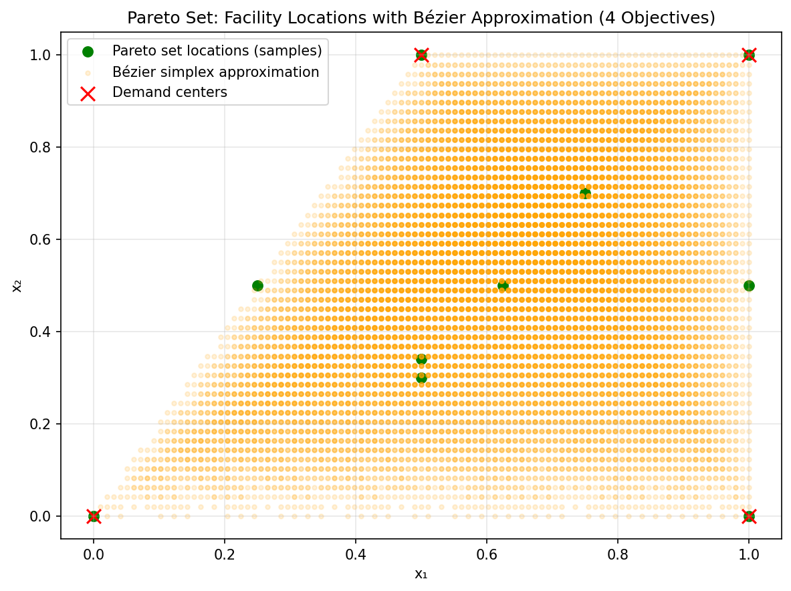
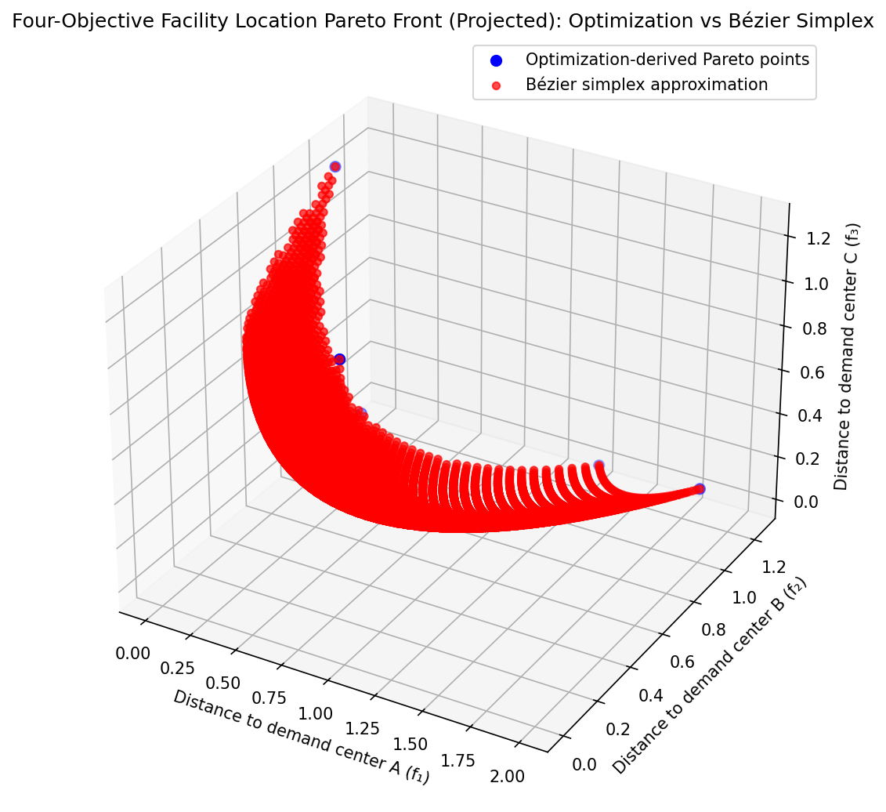

Facility Location and Continuous Approximations
Strongly convex multi-objective frameworks naturally accommodate classic spatial, physical, and logistics challenges. For instance, urban planning and supply chain optimization frequently involve determining the optimal spatial coordinates for physical facilities (e.g., warehouses, hospitals, or transit hubs) to mutually minimize the travel distances to several distributed demand points.
In such Weber-type facility location problems, when evaluating trade-offs using squared Euclidean distances, the formulation becomes a simultaneous minimization of multiple objectives:
Here \(x\) is the facility location and \(a_k\) is a demand center. Each objective has Hessian \(2I\), giving a unique weighted-sum optimizer. In this example the Pareto set is the convex hull of the centers. It is a simplex only when those centers are affinely independent; otherwise the priority simplex maps onto a lower-dimensional or non-simplex hull.
Related engineering problems can also produce quadratic reference models, but their curvature must be checked in the actual decision variables. Adaptive weighted-sum sampling [dWK] and multi-objective Newton methods [FGranaDS09] offer ways to obtain reference solutions under their respective assumptions. The squared-distance example below has a closed form, making independent surrogate validation especially straightforward.
Approximating these Pareto fronts with a Bézier simplex yields a completely continuous, analytic structural location map. Planners and decision-makers are empowered to visually and analytically slide trade-off priorities—such as selectively favoring certain demand hubs—to determine the optimal coordinates seamlessly, without needing to re-solve the spatial optimization from scratch.
Numerical Experiments
To demonstrate the scalability of Bézier simplex fitting across different numbers of objectives, we generate Pareto front samples for two, three, and four objectives by solving weighted sums of convex squared-distance objectives.
Two Objectives: We consider two demand centers at \(a_1=(0,0)\) and \(a_2=(1,1)\), with objectives \(f_1(x) = \lVert x - a_1\rVert^2\) and \(f_2(x) = \lVert x - a_2\rVert^2\). The weighted objective \(f(x, w) = w_1 f_1(x) + w_2 f_2(x)\) is strongly convex. We sample 10 weights and fit a degree-3 Bézier simplex.
 |
 |
Pareto set (2-obj). |
Pareto front (2-obj). |


Three Objectives: We consider three demand centers at \(a_1=(0,0)\), \(a_2=(1,0)\), and \(a_3=(0.5,1)\), with \(f_k(x) = \lVert x - a_k\rVert^2\) for each \(k\). The weighted objective is \(f(x, w) = w_1 f_1(x) + w_2 f_2(x) + w_3 f_3(x)\). We sample 10 weight vectors on the 2-simplex and fit a degree-3 Bézier simplex.
 |
 |
Pareto set (3-obj). |
Pareto front (3-obj). |


Four Objectives: We add a fourth demand center at \(a_4=(1,1)\), with \(f_4(x) = \lVert x - a_4\rVert^2\). The weighted objective is \(f(x, w) = w_1 f_1(x) + w_2 f_2(x) + w_3 f_3(x) + w_4 f_4(x)\). We sample 10 weight vectors on the 3-simplex and fit a degree-2 Bézier simplex. For visualization, we project to 3D by plotting \(f_1, f_2, f_3\).
 |
 |
Pareto set (4-obj). |
Pareto front (4-obj). |


The complete code is available in examples/generate_facility_location_pareto_2obj.py, examples/generate_facility_location_pareto_3obj.py, and examples/generate_facility_location_pareto_4obj.py. These figures illustrate the fitting workflow; the sample counts alone do not establish accuracy throughout higher-dimensional domains.
An exact reference map for understanding the figures
Differentiating the weighted objective gives
Thus the decision map is affine in priority weights and its objective map is quadratic. A degree-one simplex can represent the locations exactly; a degree-two simplex can represent their squared distances exactly. Higher degrees in the figure scripts illustrate the fitting API but are not needed for expressiveness in this particular problem.
Two centers give a segment, three noncollinear centers give a triangle, and four centers in the plane give their planar convex hull. In the last case, the input still has four barycentric columns and dimension three, but the decision image has dimension at most two. Several weight vectors can describe the same optimal location. This is an example of why a simplex parameterization need not be one-to-one.
Reproduce a fit with independent validation
The following example fits the three-center objective map and checks it against the closed-form solution on new weights. It does not require SciPy or the optimization-based figure scripts.
import torch
from torch_bsf import BezierSpace, Samples, fit
from torch_bsf.sampling import sample
space = BezierSpace.simplex(2, degree=2)
centers = torch.tensor([[0., 0.], [1., 0.], [.5, 1.]], dtype=torch.float64)
def objective_values(points):
locations = points.parameters @ centers
return (locations[:, None, :] - centers[None, :, :]).square().sum(2)
training = sample(space, 40, seed=7)
result = fit(space, Samples(training, objective_values(training))).require_success()
validation = sample(space, 50, seed=8)
error = (result.model(validation) - objective_values(validation)).abs().max()
assert error < 1e-12
assert result.diagnostics.data.rank == space.n_controls
The quadratic triangle has six controls. The 40 training rows in this example determine all six columns of its design matrix, as the rank check confirms. By comparison, the four-objective figure script uses ten samples for a quadratic tetrahedron, which also has ten controls. Count equality does not ensure rank or held-out accuracy; check both before interpreting the dense plotted predictions.
Changing the location model
Squared Euclidean distance makes this example unusually simple. Replacing it by travel time, unsquared distance, capacity constraints or a road-network simulation changes the optimizer map. The affine formula and exact quadratic front representation then need not apply. New reference solves and independent validation are required for that new target.
For a constrained location, compare objective error with distance to the feasible region. A polynomial fit through feasible observations need not stay feasible everywhere. With discrete candidate facilities, the optimum can switch discontinuously and a single continuous polynomial can blur the transition. Use the actual decision structure when choosing charts or separate models rather than treating degree as a substitute for topology.
For more on the relationship between parameter domains and image shape, see What is Bézier simplex fitting?. For boundaries, rank and sample placement, continue to Sampling and grids and Cross-validation and degree search.